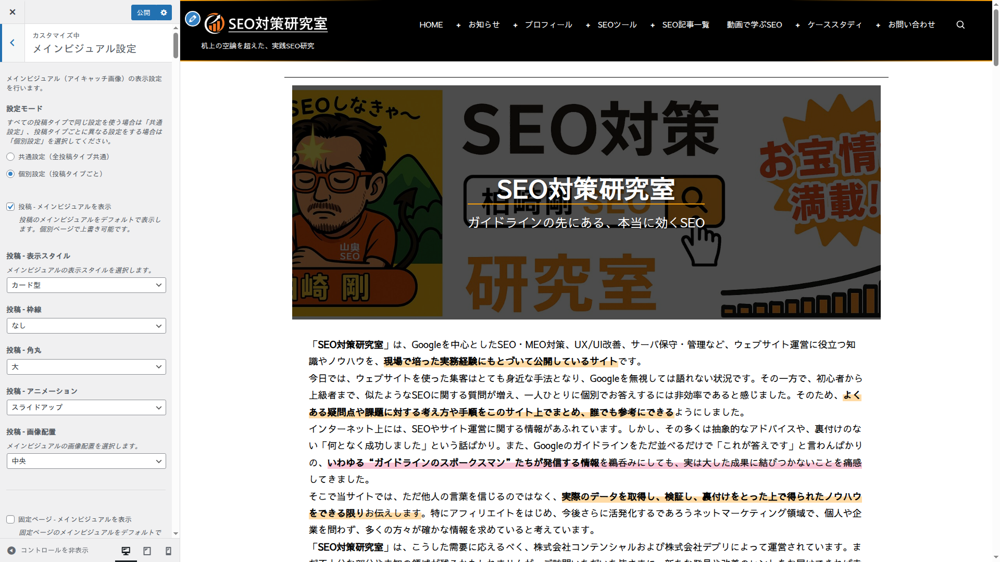
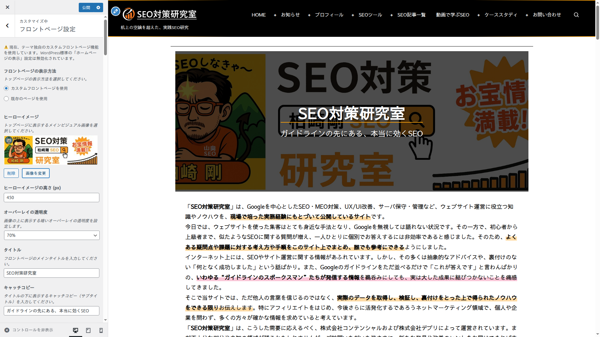
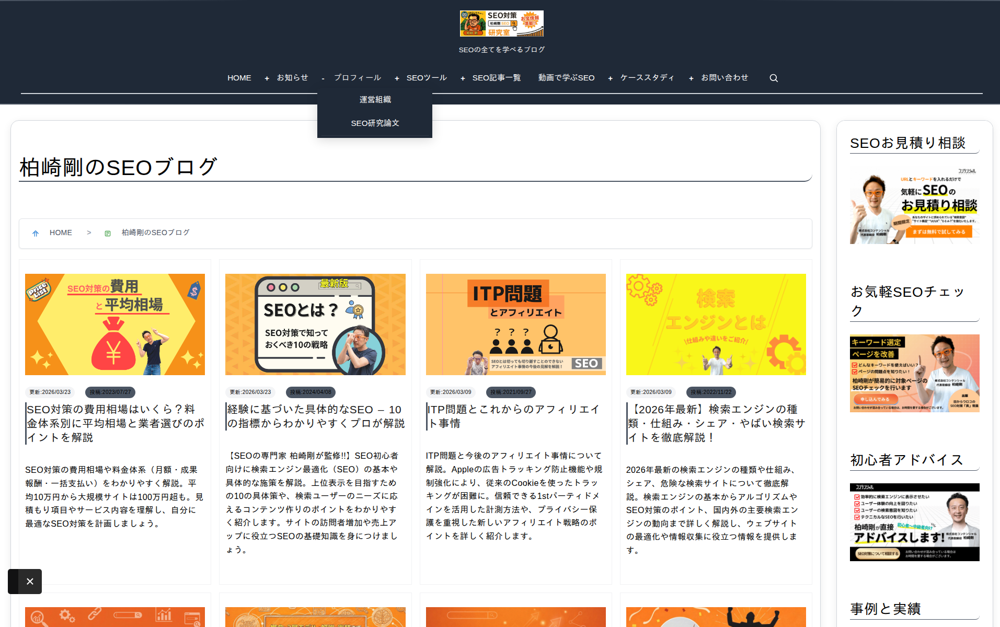

コンテンツ表示
メインビジュアル、フロントページビルダー、アーカイブページ、記事メタ情報の表示設定について解説します。
メインビジュアル（ヒーローイメージ）
「メインビジュアル設定」セクションで、投稿・固定ページのアイキャッチ画像の表示方法を設定します。

設定モード
| モード | 説明 |
|---|---|
| 共通設定（デフォルト） | すべての投稿タイプで同じ表示スタイルを適用 |
| 個別設定 | 投稿タイプごとに異なるスタイル・装飾・アニメーションを設定 |
表示スタイル
| スタイル | 説明 | 適した用途 |
|---|---|---|
| 標準 | コンテンツ幅に合わせた標準的な画像表示 | ブログ記事、一般的な投稿 |
| フルワイド | 画面幅いっぱいに画像を表示 | 写真メイン記事、LP |
| サークル（円形） | 画像を円形にクロップして表示 | プロフィールページ、人物紹介 |
| カード型 | 画像をカード型のフレーム内に表示 | 製品紹介、ポートフォリオ |
装飾設定
表示スタイルに加えて、以下の装飾オプションを設定できます。共通モード/個別モードのいずれでも利用可能です。
| 設定項目 | 選択肢 | デフォルト |
|---|---|---|
| ボーダー | なし / 細線（thin）/ 太線（thick） | なし |
| ボーダー色 | カラーピッカーで任意の色を選択 | なし |
| 角丸（border-radius） | なし / 小 / 中 / 大 / 円形 | なし |
| アニメーション | なし / フェードイン / スライドアップ / ズームイン | なし |
| 配置 | 左寄せ / 中央 / 右寄せ | 中央 |
投稿単位での上書き
各投稿・固定ページの編集画面にあるメタボックスから、カスタマイザーの設定を記事単位で上書きできます。
| メタボックスの項目 | 選択肢 |
|---|---|
| メインビジュアル表示 | グローバル設定に従う / 表示する / 非表示にする |
| 表示スタイル | グローバル設定に従う / 標準 / フルワイド / サークル / カード型 |
投稿単位の設定はカスタマイザーの設定より優先されます。特定の記事だけメインビジュアルを非表示にしたい場合や、特定の記事だけフルワイド表示にしたい場合に活用できます。
フロントページ設定
「フロントページ設定」セクションで、トップページの表示方法を選択します。

表示モード
| モード | 説明 |
|---|---|
| カスタムフロントページ（デフォルト） | テーマ独自のフロントページビルダーを使用。ヒーローイメージとセクションを組み合わせたトップページを構築できます。選択すると、WordPress標準の「ホームページの表示」設定は無効化されます。 |
| 既存のページを使用 | WordPress標準のページ設定を使用。任意の固定ページをトップページに設定できます。タイトル表示/非表示とアイキャッチ画像表示/非表示を個別に設定可能。 |
ヒーロー画像
カスタムフロントページのトップに表示する大型バナー画像です。
| 設定項目 | 値 | デフォルト |
|---|---|---|
| ヒーロー画像 | メディアライブラリから画像を選択 | なし |
| 画像の高さ | 200〜800px | 400px |
| オーバーレイ不透明度 | 0（なし）〜 0.7（濃い）、0.1刻み | 0.3 |
タイトルとキャッチフレーズ
ヒーロー画像の上に重ねて表示するテキストです。
| 設定項目 | 説明 |
|---|---|
| タイトル | ヒーロー画像上に大きく表示される見出しテキスト |
| キャッチフレーズ | タイトル下に表示されるサブテキスト |
説明文の取得元
フロントページに表示する説明文の取得方法を選択します。
| モード | 説明 |
|---|---|
| 手動入力（デフォルト） | WYSIWYGエディターで説明文を直接入力 |
| ページから取得 | 既存の固定ページのコンテンツを説明文として表示。ソースページのタイトルやアイキャッチ画像の表示/非表示も設定可能 |
セクション構成
ヒーロー画像の下に配置するコンテンツセクションです。3種類のセクションタイプが用意されています。
リストセクション（5枠）
カテゴリ・タグ・投稿タイプ・著者・日付範囲でフィルタリングした投稿一覧を表示するセクションです。各枠ごとに以下を設定できます。
| 設定項目 | 説明 |
|---|---|
| セクションタイトル | セクションの見出し（例:「最新記事」「おすすめ記事」） |
| 表示件数 | 表示する投稿の数 |
| 表示タイプ | カテゴリ / タグ / 投稿タイプ / 著者 / 日付範囲 から絞り込み方法を選択 |
| フィルタ条件 | 選択した表示タイプに応じて、特定のカテゴリ/タグ/投稿タイプ/著者/日付範囲を指定 |
| レイアウト | 1カラム / 2カラム / 3カラム / 4カラム / リスト |
| 並び順 | 投稿日順 / 更新日順 / ランダム |
| サムネイル表示 | アイキャッチ画像の表示/非表示 |
| 投稿日表示 | 投稿日の表示/非表示 |
| カテゴリ表示 | カテゴリ名の表示/非表示 |
| 抜粋表示 | 抜粋文の表示/非表示 |
| 一覧リンク | 「もっと見る」リンクの表示/非表示とリンク先URL |
個別セクション（5枠）
特定の投稿・固定ページを手動で選んで表示するセクションです。検索可能なセレクトボックスで複数の投稿を選択できます。
| 設定項目 | 説明 |
|---|---|
| セクションタイトル | セクションの見出し |
| 表示する投稿 | 検索可能なセレクトボックスで複数の投稿/固定ページを選択 |
| レイアウト | 表示形式を選択 |
フリーコンテンツ
WYSIWYGエディターで自由なHTMLコンテンツを入力できるセクションです。お知らせ、バナー、カスタムHTML等を配置する際に使用します。
セクション表示順の変更
カスタマイザー内の「セクション順序」コントロールで、リストセクション（5枠）と個別セクション（5枠）の表示順をドラッグ&ドロップで変更できます。デフォルトの順序は「リスト1 → 個別1 → リスト2 → 個別2 → ...」です。フリーコンテンツは常にすべてのセクションの後に表示されます。
例えば「ヒーロー画像 → おすすめ記事（個別セクション）→ 最新ニュース（リストセクション、カテゴリ「ニュース」）→ 人気記事（リストセクション、タグ「人気」）→ お知らせ（フリーコンテンツ、常に最後）」のようなトップページが構築できます。
アーカイブページ設定
「アーカイブページ設定」セクションで、カテゴリ・タグ・著者などの一覧ページの表示方法を設定します。
設定モード
| モード | 説明 |
|---|---|
| すべて共通設定を使用（デフォルト） | すべてのアーカイブページに同じ設定を適用 |
| 個別設定 | アーカイブタイプごとに個別の設定が可能（カテゴリ/タグ/著者/日付/検索/カスタム投稿タイプ別） |
設定項目一覧
| 設定項目 | 選択肢 | デフォルト |
|---|---|---|
| グリッドカラム数 | 2列 / 3列 / 4列 | 3列 |
| 並び順 | 新しい順（date）/ 更新日順（modified）/ ランダム（rand） | 新しい順 |
| アイキャッチ画像の表示 | 表示 / 非表示 | 表示 |
| サムネイルサイズ | フル / 大 / 中大 / 中 / サムネイル | フル |
| 投稿日の表示 | 表示 / 非表示 | 表示 |
| 更新日の表示 | 表示 / 非表示 | 非表示 |
| カテゴリの表示 | 表示 / 非表示 | 非表示 |
| 抜粋の表示 | 表示 / 非表示 | 表示 |
個別設定で対応するアーカイブタイプ
- カテゴリアーカイブ（category）
- タグアーカイブ（tag）
- 著者アーカイブ（author）
- 日付アーカイブ（date）
- 検索結果（search）— 並び順はWordPressの関連度順が使用されるため選択不可
- カスタム投稿タイプアーカイブ（cpt_[投稿タイプ名]）— has_archive が有効なカスタム投稿タイプごとに自動生成

記事メタ情報設定
「記事メタ情報設定」セクションで、個別記事ページに表示するメタ情報を設定します。記事のヘッダーエリア（コンテンツの直前）に表示されます。
設定モード
| モード | 説明 |
|---|---|
| すべて共通設定を使用（デフォルト） | すべての投稿タイプに同じメタ情報表示を適用 |
| 個別設定 | 投稿タイプごとに表示するメタ情報を個別に設定。投稿（post）、固定ページ（page）、カスタム投稿タイプそれぞれに独立した設定 |
表示/非表示の切り替え
| メタ情報 | 説明 | デフォルト |
|---|---|---|
| 投稿日 | 記事の公開日を表示 | 表示 |
| 更新日 | 記事の最終更新日を表示。SEO上、更新日の表示は検索エンジンにコンテンツの鮮度を伝える効果があります | 表示 |
| 著者 | 記事の著者名を表示 | 非表示 |
| カテゴリ | 記事が属するカテゴリを表示 | 非表示 |
| タグ | 記事に付けられたタグを表示 | 非表示 |
| タグ表示上限 | 表示するタグの最大数（1〜50件） | 5件 |
SEOメタタグ設定
同じ「記事メタ情報設定」セクションに、SEOメタタグの有効/無効切り替えも含まれています。
| 設定項目 | 説明 | デフォルト |
|---|---|---|
| メタディスクリプション自動生成 | 各ページタイプに応じた <meta name="description"> を自動出力 | 有効 |
| メタキーワード自動生成 | focus_keyword・タグ・カテゴリ・タイトルから <meta name="keywords"> を自動生成 | 有効 |
SEOプラグイン（Yoast SEO、All in One SEO、Rank Math等）を使用する場合は、メタタグの重複を避けるためにテーマ側の自動生成を無効化することを推奨します。
デフォルトアイキャッチ画像
「デザイン設定」セクションで、アイキャッチ画像が未設定の投稿に表示するデフォルト画像を設定できます。以下の場面で使用されます。
- アーカイブページの記事カードでサムネイルが空にならないようにする
- SNS共有時にOGP画像が未設定の場合のフォールバック
- メインビジュアル表示が有効だがアイキャッチが未設定の場合の代替
推奨サイズは 1200×800px です。